12 Vizualizacija podataka uz paket ggplot2
12.1 Eksploratorna analiza podataka
Eksploratorna analiza podataka (engl. EDA - exploratory data analysis) proces je analize podatkovnog skupa s ciljem upoznavanja s podacima i donošenjem određenih zaključaka. Knjiga R for Data Science (čiji je koautor Hadley Wickham, autor megapopularnih R paketa kao što su stringr, lubridate, plyr, dplyr i sl.)) navodi da se eksploratorna analiza u principu sastoji od tri dijela:
- prilagodba podataka (engl. data wrangling)
- vizualizacija podataka
- izrada modela
pri čemu ovo nije slijedni proces već cirkularni, a faze se često međusobno prožimaju. Bitno je naglasiti da eksploratorna analiza nije proces koji se može automatizirati niti pasivno provoditi; analitičar nije tek promatrač podataka, već ima aktivnu ulogu u procesu. Inicijator cijelog procesa analize upravo su pitanja o podacima koje analitičar uočava i zadaje, a na koje odgovor može dati eksploratorna analiza; pitanja mogu biti raznolika, sažeta ili kompleksna, općenita ili specifična, a vrlo često zahtijevaju visoku razinu kreativnosti i znatiželje od strane analitičara. Ukoliko bismo pokušali dati općeniti predložak o kakvim pitanjima se radi, mogli bi doći do zaključka da su to pitanja: kako se ponaša neka varijabla? Na koji način se mijenja? Koji su odnosi između dvije ili više varijabli? Može li izmjena jedne varijable objasniti izmjenu neke druge varijable? i sl.
Prilagodbu podataka već smo djelomice upoznali učenjem osnovnog R-a te paketa tidyr i dplyr, a u ovoj lekciji upoznat ćemo ono što mnogi smatraju okosnicom eksploratorne analize - vizualizaciju podataka. Treća spomenuta faza procesa - izrada modela - tiče se stvaranja sažetih reprezentacija podataka u obliku matematičkih (ili drugih) modela, a koji opisuju odnose i ponašanje varijabli na koristan i/ili lako interpretabilan način (npr. uočavanje linearne ovisnosti između dvije varijable što se može opisati jednostavnom matematičkom jednadžbom). Modeliranjem ćemo se baviti u jednoj od nastupajućih lekcija.
12.2 Vizualizacija podataka uz pomoć jezika R
Jedna od često spominjanih karakteristika jezika R su njegove vrhunske funkcionalnosti vezane uz vizualizaciju podataka. Postoji veliki broj analitičara i programera koji R koriste isključivo kao vizualizacijski alat budući da na vrlo brz i jednostavan način mogu proizvesti profesionalne, atraktivne i lako interpretabilne grafove. Osnovni jezik R sam po sebi sadrži vrlo dobru podršku za stvaranje grafova (tzv. base plot sustav), no prava moć vizualizacije krije se u brojnim dodatnim paketima koji su danas dostupni preko CRAN repozitorija.
Osnovna podrška za stvaranje grafova ostvaruje se uz pomoć generičke funkcije plot a njena velika prednost je iznimna jednostavnost. Gotovo svaka popularnija klasa ima vlastitu implementaciju ove funkcije, što znači da je za “brzu” vizualizaciju često dovoljno samo proslijediti željeni objekt (ili objekte) navedenoj funkciji. Npr. ako funkciji proslijedimo dva numerička vektora jednake veličine, funkcija plot će automatski stvoriti graf sa prvim vektorom mapiranim na x-os a drugim na y-os (prikazane uz pomoć linearne kontinuirane skale). Funkcija će također automatski dodati prikladne anotacije kao što su linije za osi, oznake na osima (engl. tickmarks) i pripadajuće vrijednosti, nazive osi i sl.
Zadatak 12.1 - funkcija ‘plot’

Osnovna podrška je funkcionalna i jednostavna, ali ograničena. Na stvoreni graf se mogu dodavati nove stvari, ali ne i modificirati. Isto tako, fino podešavanje pojedinih aspekata grafa često pozive čini glomaznim i nečitljivim te se gubi dimenzija jednostavnosti (koja je glavni razlog korištenja funkcije plot).
Neki od popularnih paketa za vizualizaciju su grid i lattice. Paket grid nudi bogatiji skup funkcija za stvaranje vizualizacija od onih dostupnih unutar osnovne podrške, ali nema mogućnosti izračuna statistika vezanih uz samu vizualizaciju te je to često potrebno obaviti “ručno” prije pozivanja vizualizacijskih funkcija. Paket lattice je posebno popularan za stvaranje tzv. “uvjetnih” ili “facetiranih” grafova (engl. facet - aspekt, značajka), što znači veći broj grafova istog tipa gdje svaki odgovara pojedinoj vrijednosti neke značajke (npr. usporedba nekih veličina u nekoj populaciji ovisno o spolu ili dobi). Paket lattice također ima podršku za automatsko stvaranje legendi i sl. što se kod drugih paketa često mora raditi ručno. Potencijalni problem ovog paketa jest činjenica da nije zasnovan ni na kakvom formalnom modelu, tako da ga je teško proširivati dodatnim funkcionalnostima.
Postoji još popularnih paketa, bilo namijenjenih općenitom stvaranju vizualizacija ili nekim specifičnim primjenama, no za kraj ćemo spomenuti jedan od danas najpopularnijih vizualizacijskih paketa jezika R - paket ggplot2. Autor ovog paketa je već spominjani Hadley Wickham, a zasnovan je na tzv. “grafičkoj gramatici” (zato se i zove ggplot2, gdje dvojka zapravo dolazi od činjenice da je to paket za crtanje dvodimenzionalnih vizualizacija).
Popularnost ovog paketa krije se u tome da pokušava objediniti prednosti osnovne podrške za crtanje grafova kao i paketa lattice ali na temelju formalnog, jasno definiranog modela. Prednost ovog pristupa jest ta što omogućuje stvaranje širokog spektra vizualizacija na osnovu koncizne, jasne i sažete sintakse te omogućuje lako proširenje dodatnim funkcionalnostima. Potencijalni problem jest nešto strmija inicijalna krivulja učenja budući da je potrebno prvo usvojiti “logiku” stvaranja grafa, tj. osnovne principe navedene “grafičke gramatike”. No jednom kada se premosti ova početna prepreka, stvaranje kvalitetnih vizualizacija jest brzo, lako i učinkovito, što dokazuje i činjenica da je ggplot2 danas jedan od najpopularnijih paketa za vizualizaciju podataka koji je izišao iz granica jezika R te se reimplementira i u drugim programskim jezicima za analizu podataka (npr. paket ggplot u jeziku Python, paket gramm u Matlab-u).
Zbog svega gore navedenog, mi ćemo se u nastavku usredotočiti upravo na paket ggplot2 kao jedan od najpopularnijih i najprimjenjivijih vizualizacijskih paketa jezika R.
12.3 Grafička gramatika i paket ggplot2
Grafička gramatika (engl. grammar of graphics) nam daje sljedeće:
- principe koji omogućuju stvaranje i interpretaciju kompleksnih vizualizacija
- naputke što predstavlja “dobro oblikovanu” ili “kvalitetnu” vizualizaciju
Kao što jezična gramatika omogućuje oblikovanje “kvalitetnih” rečenica, tako i grafička gramatika zapravo grafove gleda kao svojevrsne “rečenice” čije razumijevanje ovisi o tome kako pojedine komponente uklopiti u jasnu, razumljivu cjelinu. No, također kao kod jezične gramatike, rečenica može biti gramatički ispravna ali i dalje besmislena - drugim riječima, gramatika je temelj za kvalitetu, ali ne i garancija iste; smislenost i svrhovitost konačnog rezultata i dalje ovisi o kreativnosti i sposobnosti stvoritelja rečenice, tj. vizualizacije.
Kako bi olakšali učenje grafičke gramatike, što realno predstavlja najveću prepreku svladavanju paketa ggplot2, važno je da se pridržavamo osnovnog principa kojeg možemo parafrazirati ovako - kvalitetna vizualizacija je zapravo kompozicija niza sastavnica od kojih svaka ima jasno definiranu ulogu. Shodno tome, graf ne bismo trebali gledati kao jednu kompaktnu cjelinu, već trebamo pokušati identificirati pojedine dijelove i naučiti na koji način oni doprinose konačnoj vizualizaciji. Navedeni dijelovi nisu nužno vizualne komponente grafa, tj. dijelovi koji sačinjavaju grafiku koju gledamo, već gradivni elementi koje vizualizacijski sustav koristi kako bi stvorio konačni rezultat.
12.3.1 Aspekti podataka, estetike i geometrije
Za početak uvedimo pojednostavljeni model gramatike od tri komponente:
- podaci (koje želimo vizualizirati)
- estetike (mapiranje podataka na elemente grafa)
- geometrije (grafička reprezentacija podataka na grafu)
Podaci su, naravno, ključna komponenta grafa. Oni predstavljaju ono što želimo prikazati grafom. Isto tako, oni su relativno neovisni od ostalih komponenti vizualizacije - iste principe vizualizacije možemo primijeniti nad različitim podatkovnim skupovima. No usprkos tome, stvaranje novog grafa najčešće počinje sa odabirom podatkovnog skupa, čije značajke diktiraju daljnje korake procesa vizualizacije.
Estetike (engl. aesthetics) zapravo nemaju veze sa doslovnom interpretacijom “znanosti o lijepom”, već se zapravo radi o odabiru načina kako određene segmente podatkovnog skupa prikazati na grafu. Naime da bi vizualizacija podatka imala smisla, mi taj podatak moramo prikazati na vizualno interpretabilan način. Uobičajen princip jest prikaz uz pomoć položaja na dvodimenzionalnoj ravnini uz pomoć kartezijevog koordinatnog sustava koji ravninu ortogonalno segmentira uz pomoć dvije osi, nazvane x i y, koje predstavljaju dvije “osnovne estetike”. One nisu jedine - estetike su također i boja, oblik, uzorak i sl. Jedan od načina lakšeg razumijevanja što je zapravo estetika može biti i “ono što se često objašnjava legendom uz graf”; ako je estetika zapravo mapiranje na vizualnu komponentu grafa, legenda grafa je njezin inverz - objašnjenje što koja komponenta zapravo znači.
Konačno, geometrija zapravo predstavlja opis kako konkretno nacrtati ono što želimo vizualizirati. Na primjer, ako smo mapirali neke stupce na x i y os, onda bi se pojedina obzervacija mogla prikazati točkom, što je tzv. point geometry. Mogli smo se isto tako odlučiti na linijsku geometriju (line geometry) i iste podatke prikazati linijom koja povezuje obzervacije. Geometrija je zapravo ono što kolokvijalno zovemo “tip grafa”, tj. crtamo tzv. “točkaste grafove” (engl. scatterplot), linijske grafove, stupčaste grafove, pite, histograme i sl. - a sve se to svodi na dodavanje odgovarajuće “geometrije” ggplot grafu.
Svaka geometrija ima svoje parametre koji mogu biti opisani fiksno ili biti ovisni o podacima - npr. točka ima svojstva položaja (x i y koordinate), boje i oblika; točke na grafu možemo npr. prikazati kružićem, iksićem ili nekim drugim simbolom, a možemo ih povezati i s nekom estetikom tako da će npr. oblik točke ovisiti o vrijednosti neke kategorijske varijable. Geometrije se mogu “slagati” jedna na drugu tako da isti graf zapravo može biti kombinacija točkastog i linijskog grafa i sl.
Prikažimo ovo sve na primjeru. Za prve primjere koristit ćemo se podatkovnim skupom mtcars kojeg smo dobili s osnovnom distribucijom jezika R unutar paketa datasets. Učitajmo taj podatkovni skup u globalnu okolinu uz pomoć funkcije data.
Zadatak 12.2 - upoznavanje sa podatkovnim skupom ‘mtcars’
# učitajte podatkovni okvir `mtcars` u globalnu okolinu
# proučite okvir `mtcars` (head, glimpse, ?...)# učitajte podatkovni okvir `mtcars` u globalnu okolinu
data(mtcars)
# proučite okvir `mtcars` (head, glimpse, ?...)
glimpse(mtcars)
head(mtcars)## Observations: 32
## Variables: 11
## $ mpg <dbl> 21.0, 21.0, 22.8, 21.4, 18.7, 18.1, 14.3, 24.4, 22.8, 19....
## $ cyl <dbl> 6, 6, 4, 6, 8, 6, 8, 4, 4, 6, 6, 8, 8, 8, 8, 8, 8, 4, 4, ...
## $ disp <dbl> 160.0, 160.0, 108.0, 258.0, 360.0, 225.0, 360.0, 146.7, 1...
## $ hp <dbl> 110, 110, 93, 110, 175, 105, 245, 62, 95, 123, 123, 180, ...
## $ drat <dbl> 3.90, 3.90, 3.85, 3.08, 3.15, 2.76, 3.21, 3.69, 3.92, 3.9...
## $ wt <dbl> 2.620, 2.875, 2.320, 3.215, 3.440, 3.460, 3.570, 3.190, 3...
## $ qsec <dbl> 16.46, 17.02, 18.61, 19.44, 17.02, 20.22, 15.84, 20.00, 2...
## $ vs <dbl> 0, 0, 1, 1, 0, 1, 0, 1, 1, 1, 1, 0, 0, 0, 0, 0, 0, 1, 1, ...
## $ am <dbl> 1, 1, 1, 0, 0, 0, 0, 0, 0, 0, 0, 0, 0, 0, 0, 0, 0, 1, 1, ...
## $ gear <dbl> 4, 4, 4, 3, 3, 3, 3, 4, 4, 4, 4, 3, 3, 3, 3, 3, 3, 4, 4, ...
## $ carb <dbl> 4, 4, 1, 1, 2, 1, 4, 2, 2, 4, 4, 3, 3, 3, 4, 4, 4, 1, 2, ...
## mpg cyl disp hp drat wt qsec vs am gear carb
## Mazda RX4 21.0 6 160 110 3.90 2.620 16.46 0 1 4 4
## Mazda RX4 Wag 21.0 6 160 110 3.90 2.875 17.02 0 1 4 4
## Datsun 710 22.8 4 108 93 3.85 2.320 18.61 1 1 4 1
## Hornet 4 Drive 21.4 6 258 110 3.08 3.215 19.44 1 0 3 1
## Hornet Sportabout 18.7 8 360 175 3.15 3.440 17.02 0 0 3 2
## Valiant 18.1 6 225 105 2.76 3.460 20.22 1 0 3 1Vidimo da ovi podaci opisuju karakteristike 32 (stara) automobila kao što su: težina, maksimalna brzina, broj konjskih snaga, broj cilindara i sl.
Kada stvaramo ggplot2 vizualizaciju onda često pomaže da razmišljamo o “slojevima” grafa. Svaki sloj na neki način “prekriva” graf poput prozirne folije, što nam omogućuje postavljanje više različitih tipova reprezentacije podataka na isti graf (npr. prikazujemo točke ali ih i povežemo linijom).
Recimo da nas zanima kako se odnose težina automobila i njegova maksimalna brzina. Intuitivni način vizualizacije bio bi:
- težina automobila (
wt) na x os grafa - potrošnja (
mpg) na y os grafa
Pogledajmo kako ovo izvesti uz pomoć ggplot2 vizualizacije. Uočimo da ćemo za početak namjerno koristiti “opširan” način stvaranja grafa - ovakav način se gotovo nikad ne koristi u praksi budući da postoji puno podesniji, sažeti način poziva metode, no na ovaj način lako ćemo uočiti pojedine bitne elemente izgradnje grafa. Stvorimo tzv. “točkasti” graf (engl. scatterplot) koji pokazuje odnos težine i maksimalne brzine automobila opisanih tablicom mtcars.
12.3.1.1 Prvi ggplot2 graf
ggplot() +
layer( data = mtcars, # 1. podaci
mapping = aes(x = wt, y = mpg), # 2. mapiranja / estetike
geom = "point", # 3. geometrija
stat = "identity", # za sada zanemariti
position = "identity") # za sada zanemariti
Osnovna funkcija za izgradnju jest funkcija ggplot. Ona zapravo inicijalizira objekt klase ggplot. Naime, za ggplot2 vizualizacije specifično je da su grafovi zapravo objekti, a ono što inače smatramo grafom je samo njihova vizualna reprezentacija. Ovdje zapravo leži moć ovakvog tipa reprezentacija - graf je nešto što možemo po volji mijenjati, preoblikovati, proširivati i pohranjivati, a vizualizacija predstavlja konačni nusproizvod upravljanja tim objektom.
Ovakvom objektu potom dodajemo “slojeve” uz pomoć funkcije layer. Sloj objektu dodajemo uz pomoć operatora +, što predstavlja intuitivan prikaz i olakšava rad sa ovakvim tipom grafova. Sloj kao takav ima one gramatičke aspekte o kojima smo ranije govorili - podatke, estetike i geometrije. U pozivu vidimo još dva aspekta grafičke gramatike - statistike i poziciju - koje ćemo objasniti kasnije. Dovoljno je napomenuti da "identity" zapravo znači “ostavi onako kakvo jest”, tj. radi se o nekoj dodatnoj obradi unutar procesa vizualizacije koju za sada zanemarujemo, tj. ne koristimo.
Iako formalno svaki sloj ima svoje gramatičke aspekte, gotovo uvijek postoje aspekti koji su zajednički svim slojevima (npr. vrlo često jedan graf prikazuje jedan podatkovni skup a svi slojevi “dijele” x i y os). Ukoliko imamo ovakve zajedničke aspekte onda ih možemo definirati odmah kod stvaranja objekta ggplot koji onda postaju “default-ni” parametri slojeva koje dodajemo (iako oni uvijek imaju opciju “gaženja” tih parametara svojim aspektima). Isto tako, za stvaranje dodatnih slojeva često se koristimo pomoćnim funkcijama intuitivnog imena koje imaju unaprijed podešene najčešće korištene parametre kako ih ne bismo morali stalno ponovo upisivati. Tako npr. funkcija geom_point dodaje sloj koji nasljeđuje već definirane aspekte a kao geometriju koristi točke.
Pogledajmo sljedeći primjer koji koristi “skraćeni” način stvaranja navedenog grafa:
# prvi `ggplot2` graf, skraćeni način izgradnje grafa
ggplot(mtcars, aes(x = wt, y = mpg)) + geom_point()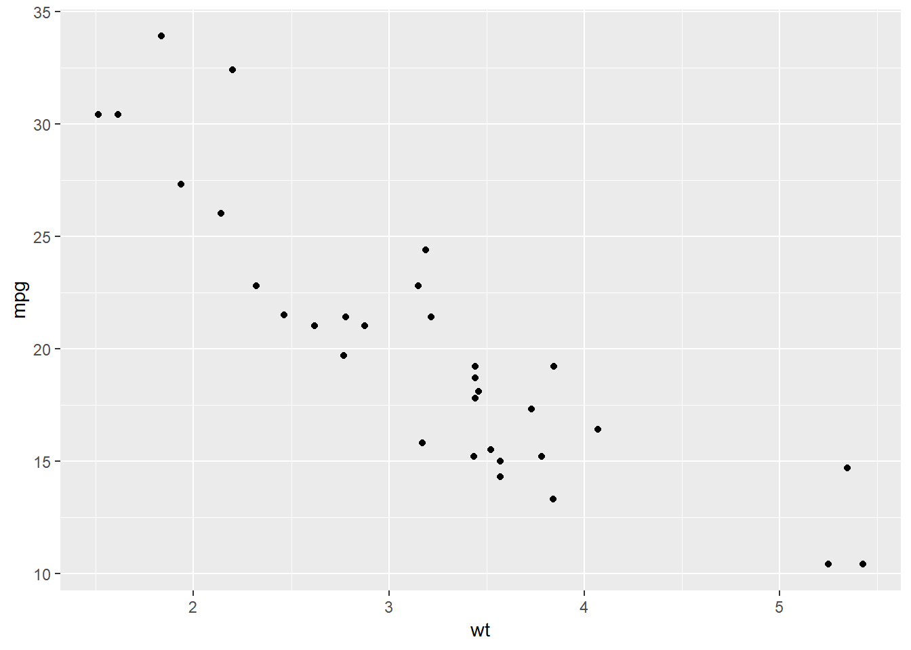
Postoji još jedan “pojednostavljeni” način stvaranja ggplot grafova, a to je uz pomoć funkcije qplot (od "*quick plot"). Ova funkcija zapravo je omotač koji omogućuje da ggplot grafove stvaramo sintaksom vrlo sličnom sintaksi funkcije plot.

Glavni razlog postojanja ove funkcije jest orijentiranost korisnicima koji traže brzu i učinkovitu alternativu plot funkciji bez potrebe za učenjem novih koncepata. Iako se možda ovakav način stvaranja grafova možda čini zgodan i jednostavan, dugoročno se ipak isplati naučiti “pravu” ggplot2 sintaksu budući da je qplot funkcija dosta limitirana i - poput funkcije plot - inicijalna jednostavnost se sve više gubi što više prilagodbi vizualizacije želimo provesti.
Vratimo se sada na naš graf - što ako želimo na njemu prikazati dodatni stupac tj. varijablu? Npr. možemo vidjeti da svi auti imaju 4, 6 ili 8 cilindara, što znači da se ova varijabla može tretirati i kao kategorijska, tj. možemo ju faktorizirati. No graf koji imamo je dvodimenzionalan - kako dodati “treću dimenziju”? Odgovor je - koristimo neku dosad neiskorištenu estetiku, npr. boju, veličinu ili oblik točaka.
Dodajte broj cilindara u gornji graf. Koristite ggplot funkciju i shape ili color estetiku kojoj ćete pridružiti varijablu cyl. Prije stvaranja grafa faktorizirajte varijablu cyl.
Zadatak 12.3 - ‘shape’ estetika
# stvorite `ggplot` graf skupa `mtcars` sa mapiranjima: x = wt, y = mpg, shape = cyl
# koristite geometriju točke
# što se događa ako zaboravimo faktorizirati stupac `cyl`?mtcars$cyl <- as.factor(mtcars$cyl)
ggplot(mtcars, aes(x = wt, y = mpg, shape = cyl)) + geom_point()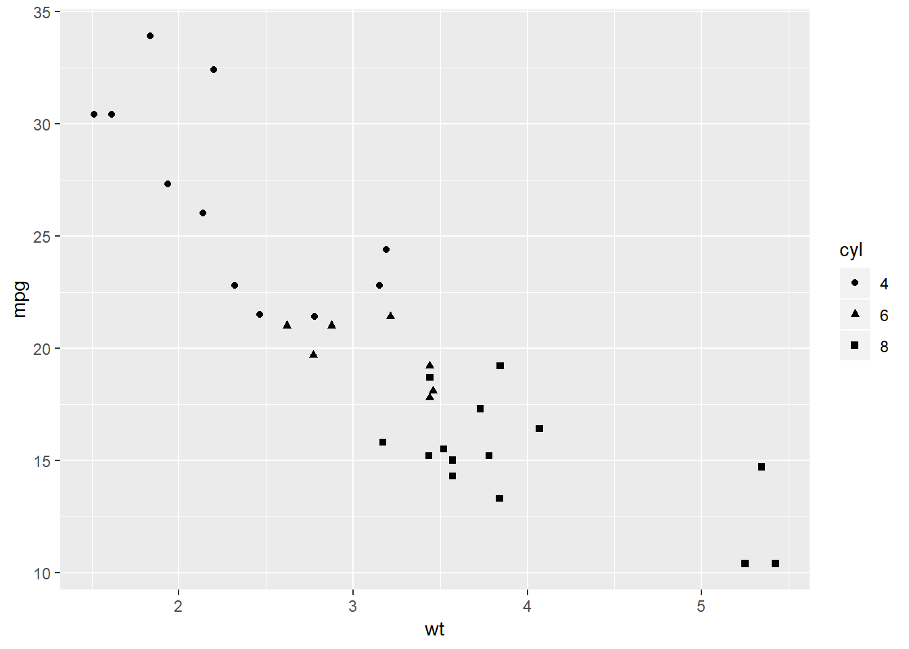
Zadatak 12.4 - ‘color’ estetika
Zadatak 12.5 - 1.5 - kombiniranje estetika

Usporedbom grafova možemo zaključiti da je boju puno lakše vizualno interpetirati od oblika, što znači da je ona često preferirana estetika (ali nije primjerena ako nam grafovi moraju biti crno-bijeli). Isto tako, uočite da možemo lako kombinirati dvije estetike nad istom varijablom, ukoliko želimo.
12.3.1.2 Funkcija labs
Vidjeli smo kako ggplot automatski stvara legendu za svoje estetike te da imenuje osi imenom varijable (osi x i y također možemo smatrati svojevrsnim “legendama”). Ukoliko želimo ručno imenovati osi i legende, ali i dodati naslov grafu možemo se poslužiti funkcijom labs koju također dodajemo kao novi sloj i koja može imati sljedeću sintaksu:
Isprobajmo ovo na primjeru.
Zadatak 12.6 - funkcija ‘labs’
# na sljedećem grafu preimenujte osi i legendu
# te dodajte adekvatni naslov (najbolje nešto što objašnjava graf)
ggplot(mtcars, aes(x = wt, y = mpg, color = cyl, shape = cyl)) + geom_point() 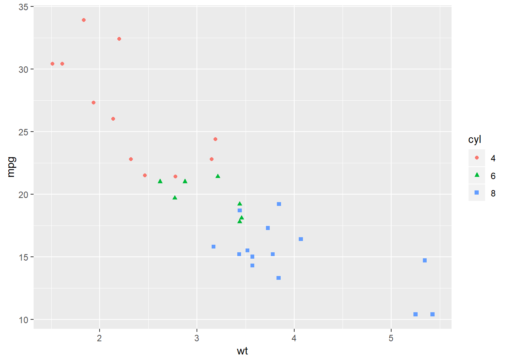
# na sljedećem grafu preimenujte osi i legendu
# te dodajte adekvatni naslov (najbolje nešto što objašnjava graf)
ggplot(mtcars, aes(x = wt, y = mpg, color = cyl, shape = cyl)) + geom_point() +
labs(x = "Težina / 1000 lb", y = "Potrošnja / milja po galonu",
color = "Broj cilindara", shape = "Broj cilindara",
title = "Teži auti više troše (manje milja na jedan galon benzina)")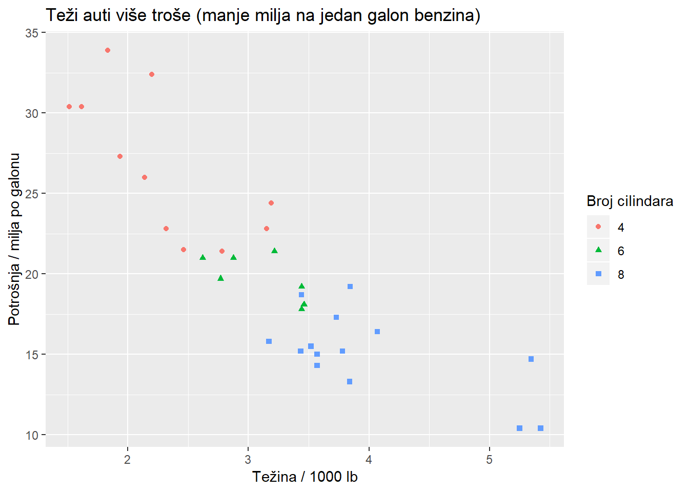
12.3.2 Fiksni parametri geometrije
Prije nastavka, obratimo pažnju na jednu prilično važnu stvar koju do sada nismo razjasnili: što kada želimo utjecati na određene parametre odabrane geometrije, ali želimo ih odrediti fiksno, umjesto da budu povezani sa određenom estetikom, tj. mapiranjem na određenu varijablu? Ili, konkretno - što ako želim napraviti graf ovisnosti maksimalne brzine o težini automobila, ali želim da graf ima točke crvene boje, ili oblika “X” - tj. da su boja i oblik fiksni, umjesto da ovise o nekoj varijabli? Odgovor je zapravo vrlo jednostavan - umjesto da za parametar postavimo ime varijable (npr. wt), mi ga inicijaliziramo na znakovnu ili numeričku vrijednost koja je smislena za taj parametar (npr. "red" ili "#FF0000" za boju, broj od 0 do 25 za oblik).
Primjer krive sintakse:
# ggplot će raditi mapiranje riječi "blue" na estetiku `color`
ggplot(mtcars, aes(wt, mpg)) + geom_point(aes(color = "blue"))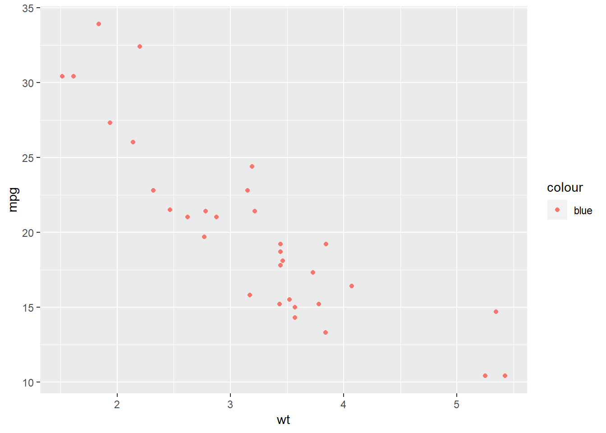
Pokušajte ovo primijeniti na primjeru.
Zadatak 12.7 - fiksni parametri geometrije
# nacrtajte graf ovisnosti maksimalne brzine o težini automobila
# koristite geometriju točke
# točke neka budu crvene boje, neka oblik broj 4 (iksić) i veličinu 312.3.3 Aspekti statistike i pozicije
Vratimo se sada na prvi graf koji je uspoređivao težinu i maksimalnu brzinu. Što ako smo htjeli ovu povezanost prikazati linijom? Pokušajte donjem pozivu dodati sloj koji koristi postojeće aspekte, ali koristi linijsku geometriju. Možete koristiti funkciju layer sa postavljenim geom parametrom na "line", no popularniji pristup je korištenje pomoćne funkcije geom_line koja radi slično kao funkcija geom_point.
Zadatak 12.8 - dodavanje linijskog sloja
# budući da stalno koristimo istu "osnovicu" grafa možemo ju
# pohraniti u zasebnu varijablu npr. imena `graf`
graf <- ggplot(mtcars, aes(x = wt, y = mpg))
# dodajte varijabli `graf` geometriju točaka a potom linijsku geometrijuDobili smo što smo tražili, no rezultat nije pretjerano uspješan jer je linija isprekidana i vizualno “zakrčuje” graf umjesto da nam donosi dodatnu informaciju (inače, linijska geometrija je vrlo popularna kada radimo sa vremenskim nizovima). Ono što bi nam vjerojatno bilo podesnije jest “izglađena” linija, tj. linija koja aproksimira položaje točaka koje opisuju težinu i maksimalnu brzinu, umjesto da ih direktno opisuje. Za ovo su nam potrebni dodatni aspekti koje smo već vidjeli u inicijalnom pozivu funkcije ggplot (točnije, funkcije layer) a koje smo u tom trenutku zanemarili, a to su aspekti statistike i pozicije.
Statistika je aspekt koji provodi neke dodatne izračune nad podatkovnim skupom prije njegove vizualizacije. To su najčešće izračuni koje lako možemo i sami provesti “ručno”, no koje je puno praktičnije ostaviti na odgovornost vizualizacijskom alatu, pogotovo ako se radi o izračunu koji se koristi samo za potrebe vizualizacije i nije nam trajno potreban (npr. stupčasti graf - bar chart - prebrojava koliko puta se pojavljuje koja kategorijska varijabla i to prikazuje visinom stupca).
Većina statistika provode agregaciju, ali nije pravilo. Neke od češće korištenih statistika su:
count- prebrojavanje pojava (za kategorijske varijable)bin- raspoređivanje pojava u ladice i prebrojavanje (za kontinuirane varijable)smooth- “zaglađivanje” tj. “usrednjenje” korištenjem odabrane metode (najčešćelmza linearno ililoessza zakrivljeno zaglađivanje)unique- uklanjanje duplikataidentity- direktno preslikavanje, tj. “ostavljanje kako jest”
Ovo su samo neke statistike, a dodatne se mogu naći u dokumentaciji.
Svaka statistika ima svoju pomoćnu funkciju koja prati oblik stat_<ime_statistike> i koja stvara vlastiti sloj vezan uz tu statistiku.
Vratimo se na naš graf ovisnosti potrošnje o težini automobila, ali ovaj put umjesto dodavanja sloja linijske geometrije dodajmo sloj koji će prikazati “zaglađivanje” (tj. statistiku smooth). Ovo je odličan primjer korištenja statističkog aspekta - umjesto da se točke direktno povežu linijom, uz pomoć posebne funkcije ćemo “usrednjiti” vrijednosti a potom ćemo tako usrednjene vrijednosti povezati linijom ili krivuljom. Za ovo je idealna funkcija stat_smooth koja će - ukoliko koristimo default-ne parametre - stvoriti novi sloj sa “zaglađenim” prikazom osi y u ovisnosti o osi x, korištenjem tzv. loess metode, uz prikaz intervala pouzdanosti. Ovakav sloj možemo lako dodati već prije definiranoj varijabli graf.
Zadatak 12.9 - funkcija ‘stat_smooth’ i metoda ‘lm’
# dodajte geometriju točaka na varijablu `graf`
# te potom dodatni sloj sa krivuljom zaglađivanja
# koristite funkciju `stat_smooth` uz parametar `method`
# postavljen na `lm` (linearno zaglađivanje)Zadatak 12.10 - funkcija ‘stat_smooth’ i metoda ‘loess’
Zadatak 12.11 - ‘group’ estetika
# stvorite još jednom isti graf ali sloju zaglađivanja
# dodajte estetiku `group` postavljenu na `cyl`
# Što smo ovime postigli?U zadnjem primjeru vidjeli smo tzv. group estetiku. Ona radi slično group_by funkciji iz SQL-a ili dplyr-a, tj. ako računamo agregacije nad nekim skupom podataka, onda se umjesto nad cijelim podatkovnim skupom one rade nad svakom definiranom grupom zasebno. Korištenjem ove estetike možemo na grafu prikazati zasebne izračune prema odabranoj grupi, pa tako je i u ovom primjeru zaglađivanje rađeno po “podgrupama” ovisno o broju cilindara.
Kod nekih vizualizacija može se dogoditi da su podaci već “grupirani” ali mi želimo dodati geometriju koja radi nad cijelim podatkovnim skupom - u tom slučaju najlakše je jednostavno postaviti group estetiku na brojku 1, što će R interpretirati kao “sve je jedna grupa” te to tako i prikazati.
12.3.4 Povezanost geometrije i statistike
U pravilu određene geometrije prirodno koriste “svoje” statistike (npr. stupčasti graf nastaje tako što se prebrojavaju pojave određene kategorije što se onda reprezentira visinom stupca). U praksi ovo znači da kod vizualizacije “statističkih” slojeva zapravo imamo mogućnost definiranja geom sloja sa stat parametrom ili stat sloja sa geom parametrom - pri čemu često nije potrebno ni posebno podešavati “prateći” parametar budući da je po default-u postavljen na onaj koji nam treba. Tako npr. geom_bar već unaprijed koristi count statistiku, a ponaša se analogno stat_count funkciji koja već ima postavljenu bar geometriju.
Koju onda pomoćnu funkciju izabrati, stat ili geom? Ovo je zapravo potpuno nebitno, budući da je učinak isti, ali u praksi se nešto češće koriste geom funkcije većinom zbog malo konzistentnije sintakse izgradnje grafa.
Pokušajmo sada napraviti stupčani graf (engl. bar plot) koji će visinom stupića prikazati broj pojavljivanja određene kategorije - npr. zastupljenost pojedinog broja cilindara u okviru mtcars. Za ovo koristimo pomoćnu funkciju geom_bar koja ima unaprijed postavljenu count statistiku.
Zadatak 12.12 - stupčasti graf
# nacrtajte stupčani graf varijable `cyl` tablice `mtcars`
# koristite funkciju `geom_bar` ili `stat_count`Na sličan način možemo prikazati i kontinuirane varijable. Za razliku od stupčanog grafa, gdje imamo jasno definirane kategorije, ovdje ćemo morati prvo grupirati vrijednosti u tzv. “ladice” (engl. bins) na osnovu kojih gradimo graf koji se zove histogram. Opet koristimo statistiku bin, a za samo stvaranje histograma koristit ćemo pomoćnu funkciju geom_histogram.
Zadatak 12.13 - histogram
# nacrtajte histogram varijable `wt` tablice `mtcars`
# težine podijelite jednoliko u četiri ladice
# koristite funkciju `geom_histogram`Kako zapravo radi statistički aspekt? U pravilu se na osnovu postojećih varijabli izračunavaju jedna ili više novih, najčešće agregiranih varijabli. U dokumentaciji možemo naći konkretne informacije o nazivima tih novih varijabli i njihovom značenju. Na primjer, ako pogledamo dokumentaciju za funkciju stat_bin, možemo vidjeti da ona stvara varijable imena count, ncount, density i ndensity. Bilo koja od ovih varijabli može se koristiti kao “visina stupića”, tj. kao estetika y. Razlog zašto ovu estetiku nismo eksplicitno navodili u prethodnom primjeru jest činjenica da funkcija statistike automatski odabire onu agregatnu funkciju koja se očekivano najčešće koristi (u našem slučaju je to bila count). Ukoliko želimo obaviti neku drugu agregaciju, možemo i eksplicitno postaviti estetiku y na odabranu varijablu, samo moramo koristiti ggplot2 konvenciju gdje takvim varijablama kao prefiks i sufiks postavljamo .., kao npr:
Pokušajmo ovo isprobati na primjeru.
Zadatak 12.14 - histogram / ‘ncount’
# nacrtajte histogram varijable `wt` tablice `mtcars`
# težine podijelite jednoliko u četiri ladice
# koristite funkciju `geom_histogram`
# za agregacijsku varijablu postavite `ncount`
# prokomentirajte dobiveni rezultatOtiđimo sada korak dalje. Nacrtajte isti histogram (sa default-nom count agregacijom), no prikažite na njemu i koliko je unutar svake kategorije zastupljen koji broj cilindara. Ovo ćete lako izvesti dodavanjem estetike fill koja reprezentira “punjenje” stupića bojom (za razliku od estetike color koja bi u slučaju stupčanog grafa bojala linije oko pravokutnika).
Zadatak 12.15 - ‘fill’ estetika u histogramu
Ovdje vidimo primjer “kombiniranog” histograma - funkcija će zapravo izračunati frekvencije pojavljivanja za svaku kategoriju težine te za svaki broj cilindara. Jedan od načina kako ovo prikazati bio bi trodimenzionalni graf gdje bi u baznoj ravnini bile kombinacije dvije navedene varijable dok bi treća dimenzija bila rezervirana za visinu stupića - no kod projekcije takvog grafa na dvodimenzionalnu ravninu stupići bi se međusobno prekrivali. Kako bi se rezultati mogli učinkovito prikazati na dvodimenzionalnom grafu, stupići su “repozicionirani” tako da su je stupić za pojedine cilindre postavljen jedan na drugi u sklopu iste kategorije težine. Ovo je zapravo primjer korištenja tzv. pozicijskog aspekta ili jednostavno pozicije.
Pozicija je aspekt koji omogućuje “razmještanje” određenog aspekta grafa ukoliko je to potrebno zbog jasnoće prikaza. U prethodnom primjeru već smo uočili “raslojavanje” stupića prema kategorijskoj varijabli. U ovom slučaju funkcija je zapravo koristila pozicijski aspekt "stack" koji “male” stupiće razmješta tako da ih slaže jedan na drugi. Alternativa je postavljanje aspekta pozicije (position) na “izbjegavanje” - "dodge"- kod kojeg će stupići biti nacrtani u grupicama jedan pored drugog.
Zadatak 12.16 - pozicijski aspekt ‘dodge’
Uočite da smo korištenjem “izbjegavanja” izgubili precizan prikaz intervala pojedine ladice, ali smo dobili jasniji prikaz odnosa između zastupljenosti pojedinih kategorija unutar pojedine ladice.
Zadatak 12.17 - pozicijski aspekt ‘identity’
# nacrtajte opet isti histogram, ali pozicijski aspekt
# `position` postavite na `"identity"`
# parametar geometrije `alpha` postavite na 0.2 ggplot(mtcars, aes(x = wt, fill = cyl)) +
geom_histogram(bins = 4, position = "identity", alpha = 0.4)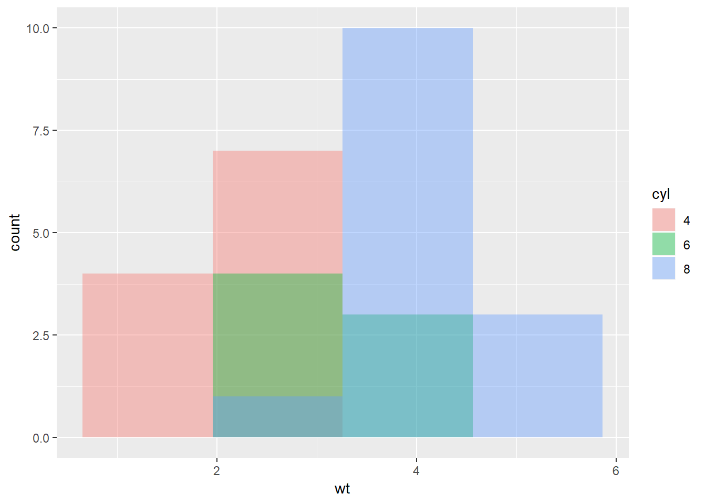
Kao što vidimo, pozicijski aspekt "identity" znači “bez repozicioniranja”.
Pokažimo još jedan pozicijski aspekt - "fill" (nemojte ga miješati sa estetikom fill!).
Zadatak 12.18 - pozicijski aspekt ‘fill’
# nacrtajte isti histogram, ali uz pozicijski aspekt postavljen na `fill`
# radi bolje vidljivosti pravokutnike uokvirite crnom linijom
# objasnite rezultat. Što smo postigli ovakvim histogramom?ggplot(mtcars, aes(x = wt, fill = cyl)) +
geom_histogram(bins = 4, color = "Black", position = "fill")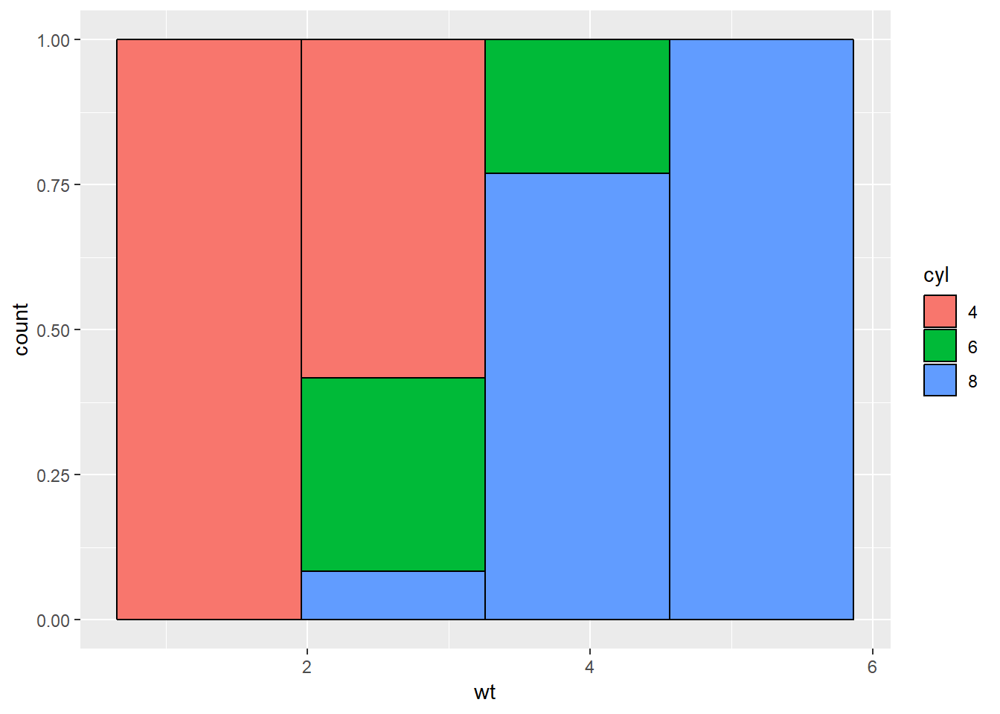
Konačni primjer pozicijskog aspekta kojeg ćemo prikazati je dodavanje “šuma” obzervacijama koje prikazujemo točkastim grafom a koje prekrivaju jedna drugu te djeluju kao jedna obzervacija. Dodavanjem pozicijskog aspekta jitter možemo bolje vizualno komunicirati da se radi o većem broju obzervacija (ovo je učinkovito za manje podatkovne skupove, za veće ćemo često bolje rezultate postići korištenjem parametra transparentnosti, smanjivanjem veličine točaka ili uzorkovanjem skupa prije vizualizacije).
Za primjer ćemo stvoriti jedan “umjetni” podatkovni okvir od 100 “prekrivajućih” obzervacija.
Zadatak 12.19 - pozicijski aspekt ‘jitter’
df <- data.frame( x = c(rep(1, 90), rep(2, 9), 3),
y = c(rep(1, 70), rep(2, 25), rep(3, 5)))
# prikažite navedeni okvir uz pomoć `scatterplot` grafa, tj. točkaste geometrijeZadatak 12.20 - pozicijski aspekt ‘jitter’ (2)
# prikažite isti graf, ali umjesto `geom_point` upotrijebite
# pomoćnu funkciju `geom_jitter` koja ima ugrađen `jitter` pozicijski aspekt
# postavite `width` i `height` parametre na 0.3 (30% dodanog šuma)
# dodatno postavite `color` parametar geometrije na "blue"
# i `alpha` parametar ("prozirnost") na 0.4 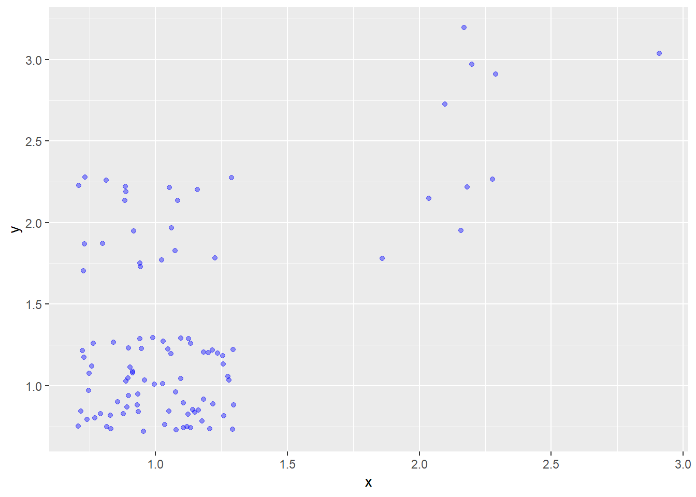
12.3.4.1 Spremanje slike u datoteku
Za kraj ovog dijela naučimo spremiti sliku u datoteku kako bi ju mogli lako ugraditi u neki drugi izvještajni dokument, znanstveni rad, proslijediti elektroničkom poštom i sl.
R po default-u koristi zaslon kao “grafički uređaj” (engl. graphical device). Opcionalno, grafiku možemo “preusmjeriti” na neki drugi “uređaj”, najčešće datoteku određenog tipa (png, tiff, pdf i sl.). Popis svih mogućnosti možemo pogledati uz pomoć naredbe ?Devices. Za spremanje grafova u rasterskom formatu preporučuju se png i tiff formati, dok je za vektorski format uobičajeno koristiti pdf.
Spremanje grafova može se obaviti pozivom funkcije koja odgovara formatu u kojeg želimo pohraniti sliku (npr. funkcija pdf spremiti će iduću sliku u pdf datoteku), no paket ggplot2 nudi nešto praktičniji način - funkcija ggsave pohraniti će zadnje iscrtani* graf u datoteku odabranog imena, pri čemu će format slike zaključiti sama iz ekstenzije datoteke koju odaberemo. Ovaj način je bolji utoliko što imamo šansu prvo vidjeti graf i tek onda se odlučiti na pohranu.
Zadatak 12.21 - spremanje grafa u datoteku
# spremite sljedeći graf u datoteke `figure1.pdf`i `figure1.png`
ggplot(mtcars, aes(x = hp, y = mpg, col = as.factor(cyl))) +
geom_point() +
geom_smooth(aes(x = hp, y = mpg), method = 'loess',
linetype = 4, color = "grey", se = F, inherit.aes = F) +
labs(x = "broj konjskih snaga", y = "potrošnja", col = "broj cilindara")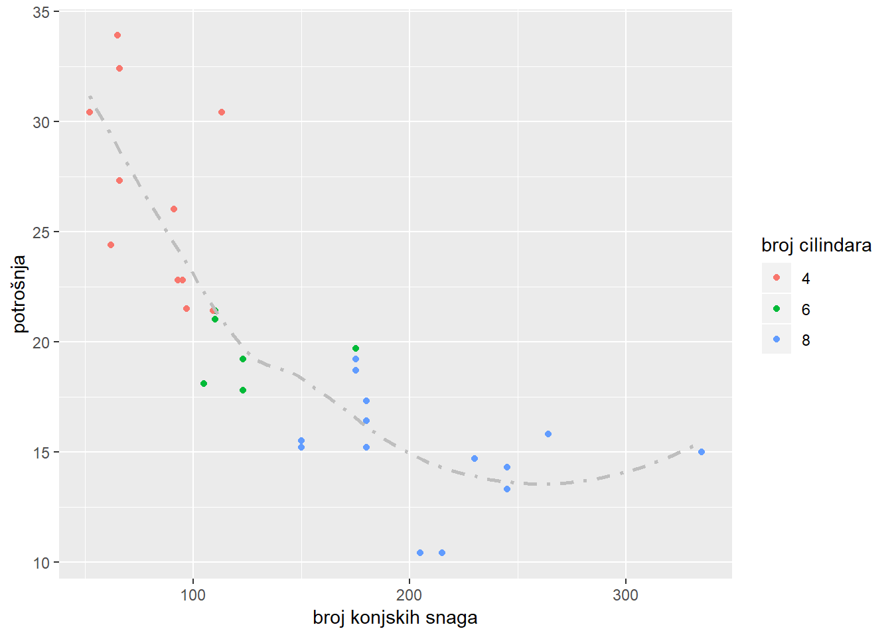
12.3.5 Aspekti skale, koordinatnog sustava i teme
Već smo ponovili da se stvaranje ggplot2 grafova često svodi na mapiranje stupaca podatkovnog skupa na estetike grafa. Skale su aspekt koji kontrolira način kako se to mapiranje provodi, tj. metodu preslikavanja samih podataka na vizualne elemente estetike. U slučaju koordinatnih osi tu se radi o preslikavanju numeričkih ili kategorijskih vrijednosti na konkretne udaljenosti na samim osima, dok npr. kod estetike boje skala odlučuje koja boja označava koju vrijednost originalnih podataka. Skala je također osnovica za stvaranje legende grafa.
Ovaj aspekt je do sada uvijek bio implicitno prisutan, ali smo dopuštali ggplot2 paketu da “odabere” default-ne vrijednosti za nas. U općenitom slučaju ggplot2 relativno dobro kontrolira aspekt skale neovisno o estetikama koje koristimo, ali vrlo često iz raznih razloga želimo utjecati na samo mapiranje kako bi npr. promijenili opseg vrijednosti koje se nalaze na grafu, oznake na osima, boje ili oblike koji se koriste i sl.
U ovoj lekciji usredotočiti ćemo se samo na one skale koje se relativno često susreću u praksi. Ostale funkcije i opcije vezane uz aspekte skaliranje mogu se pronaći u dokumentaciji (ili na RStudio ggplot2 podsjetniku).
Kada radimo sa skalama, najčešće se koristimo ovim pomoćnim funkcijama (* predstavlja “ime estetike”, kao npr. x, y, color itd.):
scale_*_continuous- za mapiranje kontinuiranih (numeričkih) vrijednostiscale_*_discrete- za mapiranje diskretnih vrijednosti
Svaka od ovih funkcija ima niz parametara koje možemo koristiti kako bi utjecali na postupak mapiranja. Npr. ako pogledamo dokumentaciju za scale_x_continuous možemo vidjeti da između ostalog možemo postaviti parametre:
name- ime skale koje ujedno postaje i naziv osi/legendebreaks- na kojim pozicijama se stavljaju crticelabels- koje vrijednosti se ispisuju ispod crticalimits- raspon vrijednosti koji će se nalaziti na osi- itd.
Važno je napomenuti da ggplot2 ima puno dodatnih pomoćnih funkcija koje omogućuju da na neke od ovih stvari podešavamo i mimo funkcija skaliranja, kao npr. već viđeni labs s kojim smo preimenovali naziv grafa, osi i legendi, ali također i funkcije xlim/ylim kojima utječemo samo na raspon osi i sl. Često se isplati pomno pogledati dokumentaciju budući da se mogu naći zgodne funkcije koje nam uvelike olakšavaju posao skraćivanjem sintakse za vizualizacijske zadatke koje obavljamo.
Isprobajmo neke od navedenih funkcija na primjerima. Koristiti ćemo se podatkovnim skupom diamonds paketa ggplot2, kojeg smo upoznali u zadacima za vježbu iz prethodne lekcije, a koji opisuje značajke dijamanata uz njihovu procijenjenu vrijednost.
Zadatak 12.22 - upoznavanje sa podatkovnim skupom ‘diamonds’
## Observations: 53,940
## Variables: 10
## $ carat <dbl> 0.23, 0.21, 0.23, 0.29, 0.31, 0.24, 0.24, 0.26, 0.22, ...
## $ cut <ord> Ideal, Premium, Good, Premium, Good, Very Good, Very G...
## $ color <ord> E, E, E, I, J, J, I, H, E, H, J, J, F, J, E, E, I, J, ...
## $ clarity <ord> SI2, SI1, VS1, VS2, SI2, VVS2, VVS1, SI1, VS2, VS1, SI...
## $ depth <dbl> 61.5, 59.8, 56.9, 62.4, 63.3, 62.8, 62.3, 61.9, 65.1, ...
## $ table <dbl> 55, 61, 65, 58, 58, 57, 57, 55, 61, 61, 55, 56, 61, 54...
## $ price <int> 326, 326, 327, 334, 335, 336, 336, 337, 337, 338, 339,...
## $ x <dbl> 3.95, 3.89, 4.05, 4.20, 4.34, 3.94, 3.95, 4.07, 3.87, ...
## $ y <dbl> 3.98, 3.84, 4.07, 4.23, 4.35, 3.96, 3.98, 4.11, 3.78, ...
## $ z <dbl> 2.43, 2.31, 2.31, 2.63, 2.75, 2.48, 2.47, 2.53, 2.49, ...
## # A tibble: 6 x 10
## carat cut color clarity depth table price x y z
## <dbl> <ord> <ord> <ord> <dbl> <dbl> <int> <dbl> <dbl> <dbl>
## 1 0.23 Ideal E SI2 61.5 55 326 3.95 3.98 2.43
## 2 0.21 Premium E SI1 59.8 61 326 3.89 3.84 2.31
## 3 0.23 Good E VS1 56.9 65 327 4.05 4.07 2.31
## 4 0.290 Premium I VS2 62.4 58 334 4.2 4.23 2.63
## 5 0.31 Good J SI2 63.3 58 335 4.34 4.35 2.75
## 6 0.24 Very Good J VVS2 62.8 57 336 3.94 3.96 2.48Zadatak 12.23 - uzorkovanje skupa ‘diamonds’
set.seed(1001)
# stvorite okvir `diamondsSample` u koji ćete staviti
# 5000 nasumičnih redaka iz okvira `diamonds`Zadatak 12.24 - korištenje aspekta skale
# "popravite" osi i legendu grafa koji prikazuje ovisnost
# veličine dijamanta, boje i cijene
# - osi x i y nazovite "volumen u mm3" i "cijena u $"
# - legendu nazovite "kvaliteta boje"
# - os x ograničite od 0 do 500
# - na osi y postavite crtice na 1000, 5000, 10000 i 20000
# - kategorije kvalitete boje postavite na brojeve
# od 1 do 7 gdje 1 predstavlja "najbolju" boju
ggplot(diamondsSample, aes(x*y*z, price, color = color)) + geom_point(alpha = 0.4) 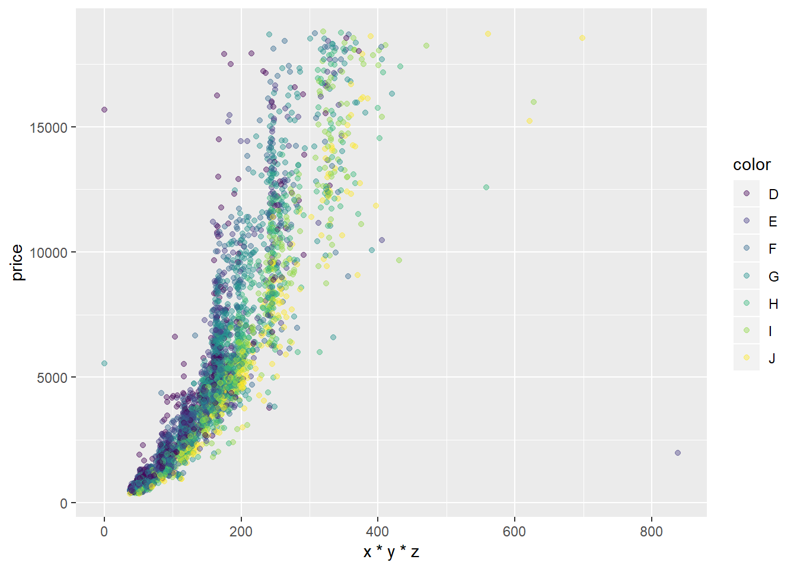
ggplot(diamondsSample, aes(x*y*z, price, color = color)) +
geom_point(alpha = 0.6) +
scale_x_continuous(name = "volumen u mm3" , limits = c(0, 450)) +
scale_y_continuous(name = "cijena u $",
breaks = c(1000, 5000, 10000, 15000)) +
scale_color_discrete(name = "kvaliteta boje", labels = 1:7)## Warning: Removed 7 rows containing missing values (geom_point).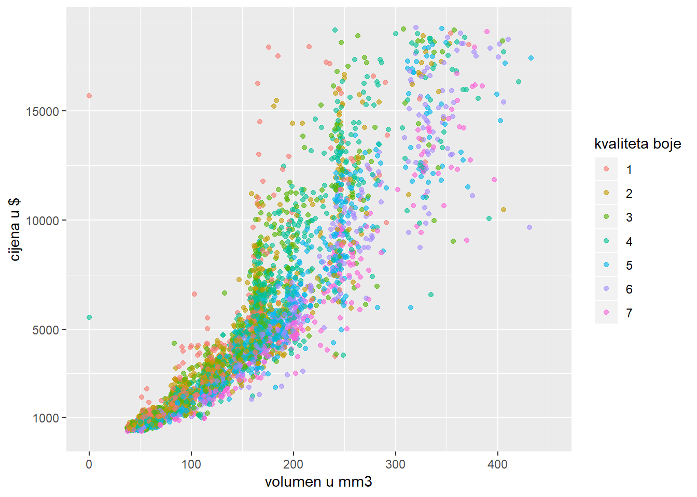
Uočite kako ggplot za svaki slučaj javlja kako neke obzervacije nisu prikazane. Ukoliko želimo spriječiti ovo upozorenje, dovoljno je dodati argument na.rm = T u sloj geometrije.
Vrlo često se događa da na grafovima uočavamo tzv. “eksponencijalni trend”, tj. da nas ovisnost jedna varijable u drugoj podsjeća na eksponencijalnu funkciju. Prethodni graf također je primjer takvog scenarija - može se primijetiti da cijena dijamanta na početku “blago” raste sa veličinom dijamanta, da bi kasnije počela strmije rasti.
U analizi podataka u ovakvim slučajevima često provodimo transformacije podataka - npr. u ovom slučaju mogli bismo logaritmirati cijenu kako bi eksponencijalni trend pretvorili u linearni kojeg u općenitom slučaju preferiramo. No transformacija cijene u logaritam nosi sa sobom problem interpretacije - graf bolje komunicira informaciju ako se na njemu nalazi doslovni, a ne izvedeni podatak (1000 dolara naspram 3 “logaritma od dolara”).
Skale nam u ovome slučaju mogu pomoći - umjesto da “diramo” podatke, mi jednostavno koristimo logaritmiranu (ili neku drugu) skalu. Konkretno, umjesto funkcije scale_*_continuous možemo odabrati:
scale_*_log10- logaritmira skalu po bazi 10scale_*_reverse- “obrće” skalu s desna na lijevoscale_*_sqrt- “korjenuje” vrijednosti skale
Zadatak 12.25 - logaritamska skala
# logaritmirajte cijenu dijamanta u prethodno izvedenom grafu
ggplot(diamondsSample, aes(x*y*z, price, color = color)) + geom_point(na.rm = T, alpha = 0.6) +
scale_x_continuous(name = "volumen u mm3" , limits = c(0, 450)) +
scale_y_continuous(name = "cijena u $", breaks = c(1000, 5000, 10000, 15000)) +
scale_color_discrete(name = "kvaliteta boje", labels = 1:7)
# logaritmirajte cijenu dijamanta u prethodno izvedenom grafu
ggplot(diamondsSample, aes(x*y*z, price, color = color)) +
geom_point(na.rm = T, alpha = 0.6) +
scale_x_continuous(name = "volumen u mm3" , limits = c(0, 450)) +
scale_y_log10(name = "cijena u $",
breaks = c(1000, 5000, 10000, 15000)) +
scale_color_discrete(name = "kvaliteta boje", labels = 1:7)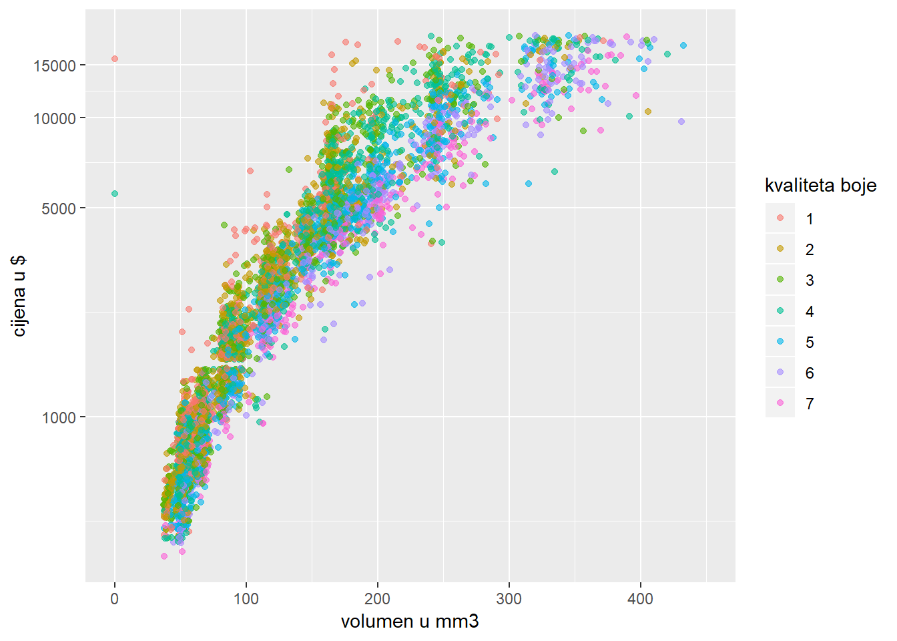
Jedna stvar koju vrlo često volimo “popravljati” na grafovima su boje - bilo da želimo bolje naglasiti informacije koje graf prenosi, uklopiti graf u okolinu u kojoj se nalazi, ili jednostavno želimo da nam graf koristi boje koje nalazimo estetski ugodnima. Upravo zbog toga estetike color i fill se vrlo često dodatno podešavaju uz pomoć skala. Za ovo imamo zgodne funkcije (dajemo primjere za fill estetike iako većina funkcija postoji i za color):
scale_fill_brewer- odabir jedne od unaprijed pripremljenih paleta boja namijenjenih prikazu diskretnih vrijednosti; imena paleta mogu se pogledati u dokumentacijiscale_fill_distiller- prilagođava palete za diskretne vrijednosti kontinuiranim varijablamascale_fill_gradient- odabir početne i konačne boje koje će se “prelijevati” jedna u drugu; koristimo za prikaz kontinuiranih vrijednostiscale_fill_gradient2,scale_fill_gradientn- ako želimo više “prelijevanja”scale_fill_grey- za crno bijele vizualizacije
Zadatak 12.26 - prilagodba boja na grafu
# podesite `fill` estetiku sljedećeg grafa korištenjem
# funkcije `scale_fill_brewer`
# parametar `palette` postavite na jednu od sljedećih paleta:
# Blues, BuPu, Greens, Greys, Oranges, OrRd, PuBu,
# PuRd, Purples, YlGn, YlOrRd
# (još paleta možete naći u dokumentaciji)
ggplot(diamondsSample, aes(x = x*y*z, fill = color)) +
geom_histogram(bins = 30, na.rm = T) +
xlim(0, 500)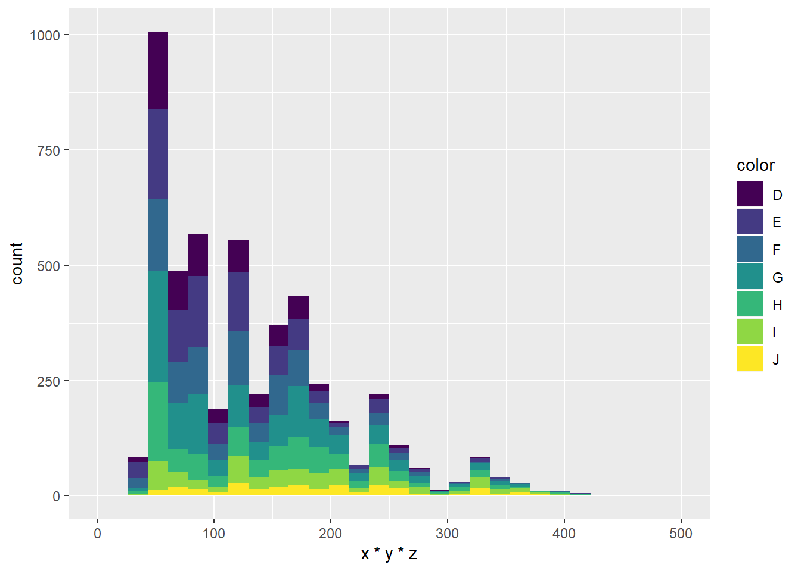
# podesite `fill` estetiku sljedećeg grafa korištenjem
# funkcije `scale_fill_brewer`
# parametar `palette` postavite na jednu od sljedećih paleta:
# Blues, BuPu, Greens, Greys, Oranges, OrRd, PuBu,
# PuRd, Purples, YlGn, YlOrRd
# (još paleta možete naći u dokumentaciji)
ggplot(diamondsSample, aes(x = x*y*z, fill = color)) +
geom_histogram(bins = 30, na.rm = T) +
xlim(0, 500) + scale_fill_brewer(palette = "Greens")
# podesite `fill` estetiku sljedećeg grafa korištenjem
# funkcije `scale_fill_brewer`
# parametar `palette` postavite na jednu od sljedećih paleta:
# Blues, BuPu, Greens, Greys, Oranges, OrRd, PuBu,
# PuRd, Purples, YlGn, YlOrRd
# (još paleta možete naći u dokumentaciji)
ggplot(diamondsSample, aes(x = x*y*z, fill = color)) +
geom_histogram(bins = 30, na.rm = T) +
xlim(0, 500) + scale_fill_brewer(palette = "YlOrRd")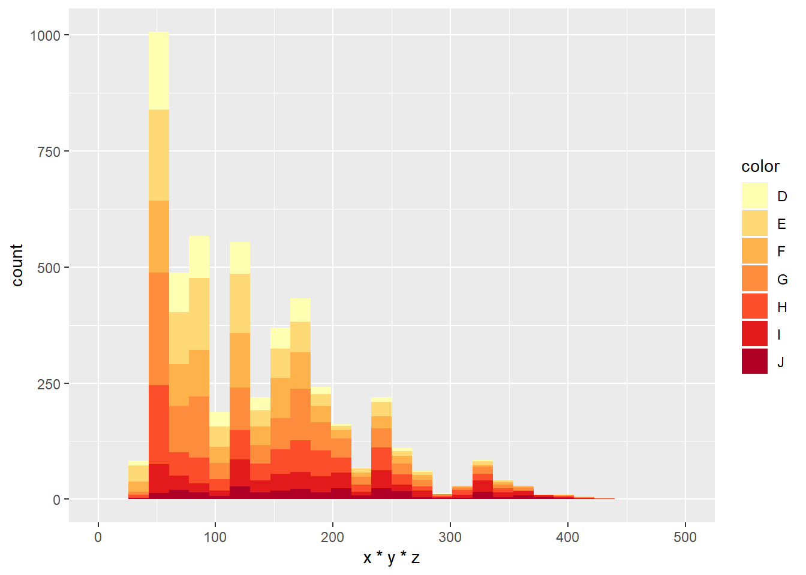
Aspekt koordinatnog sustava vrlo rijetko mijenjamo. Razlog tome je što u najvećem broju slučajeva želimo koristiti Kartezijev koordinatni sustav koji ggplot koristi po default-u. Ukoliko smatramo da naša vizualizacija zahtijeva nešto drugo - bilo da se radi o polarnom koordinatnom sustavu, ili želimo “izvrnuti” naš Kartezijev sustav na stranu, ili - što je posebno važno kod analize zemljopisnih podataka - želimo da naša vizualizacija prikazuje zemljopisnu kartu, možemo između ostalog koristiti sljedeće funkcije:
coord_polar- polarni koordinatni sustavcoord_flip- mijenjaxiyosicoord_map- koristi karte iz paketamapsimapproj
Trenutno nažalost još ne postoje karte Republike Hrvatske, no ambiciozniji čitatelji mogu pokušati stvoriti istu (i podijeliti sa lokalnom R zajednicom) prateći upute na ovoj i ovoj poveznici.
Zadatak 12.27 - izvrnuti i polarni koordinatni sustavi
# pogledajte kako sljedeći graf izgleda u "izvrnutom" a kako u polarnom koordinatnom sustavu
ggplot(diamondsSample, aes(x = x*y*z, fill = color)) + geom_histogram(bins = 30, na.rm = T) +
xlim(40, 100) 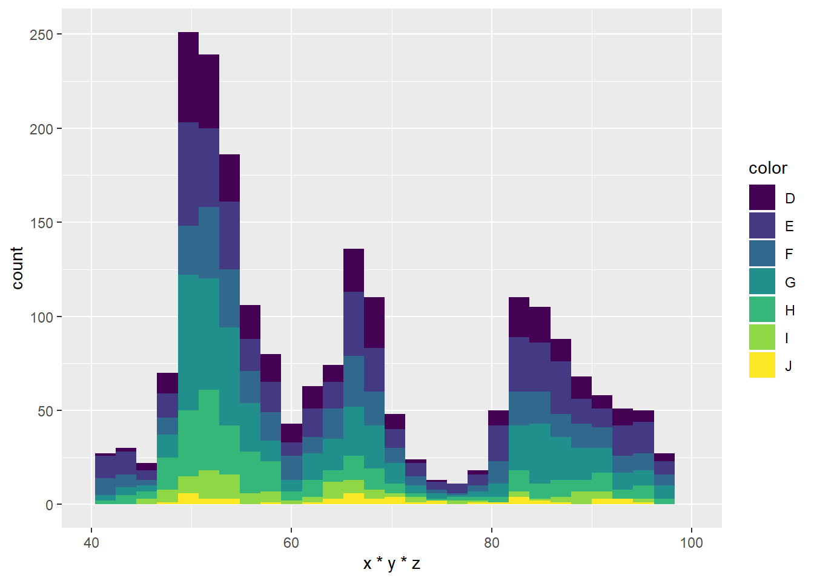
# pogledajte kako sljedeći graf izgleda u "izvrnutom"
# a kako u polarnom koordinatnom sustavu
ggplot(diamondsSample, aes(x = x*y*z, fill = color)) +
geom_histogram(bins = 30, na.rm = T) +
xlim(40, 100) + coord_polar()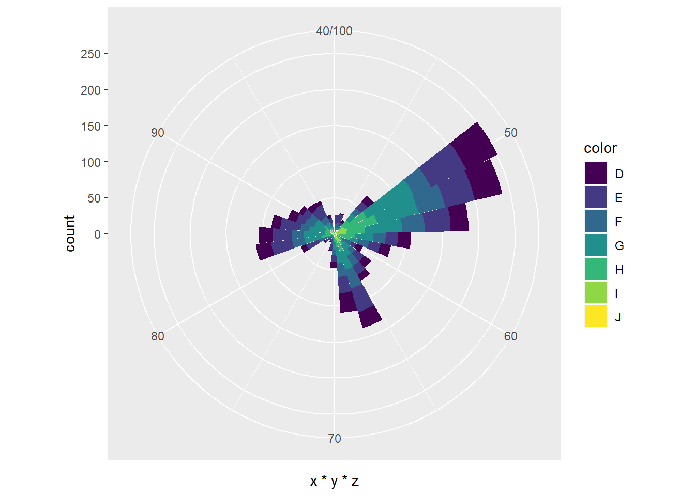
# pogledajte kako sljedeći graf izgleda u "izvrnutom"
# a kako u polarnom koordinatnom sustavu
ggplot(diamondsSample, aes(x = x*y*z, fill = color)) +
geom_histogram(bins = 30, na.rm = T) +
xlim(40, 100) + coord_flip() 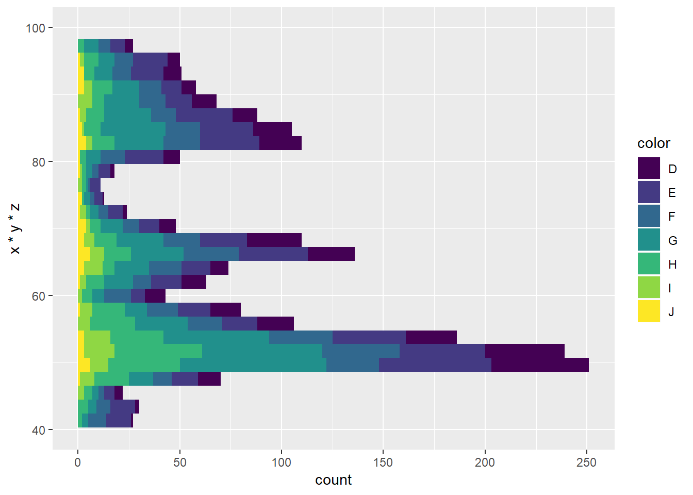
Jedna od stvari koju je zgodno zapamtiti jest ta da xlim i ylim parametri rade drugačije ovisno o tome da li ih koristimo u aspektu skale ili koordinatnog sustava; limitiranje osi u aspektu skale će “izbaciti” obzervacije koje su izvan zadanog intervala, što može utjecati na izračun sumarnih statistika, krivulja zaglađivanja i sl. S druge strane, limesi zadani u aspektu koordinatnog sustava jednostavno će “zumirati” graf na odabrano područje a i dalje će sve obzervacije ulaziti u izračune. I jedna i druga opcija su korisne, ovisno o tome želimo li graf koji prikazuje sve relevantne podatke za danu vizualizaciju ili graf koji predstavlja uvećani segment nekog drugog grafa.
Konačno aspekt teme grafa nam omogućuje da utječemo na sve vizualne aspekte grafa koji nisu povezani s podacima. To znači da možemo birati boju i izgled pozadine, font i veličinu slova, margine, poravnavanja i još niz drugih parametara grafa. Tema nam daje iznimno detaljnu kontrolu nad izgledom grafa, a budući da se zapravo radi o objektu (klase theme), temu grafa možemo pohraniti i reciklirati za sve buduće vizualizacije. Isto tako, ggplot2 nudi niz već unaprijed pripremljenih tema za korištenje i daljnju prilagodbu, a koje dohvaćamo uz skup pomoćnih funkcija od kojih su neke:
theme_gray- default-na tematheme_bw- crno-bijele osi, pogodna za projiciranje grafovatheme_classic- “klasična” tema slična onoj koju produciraplotfunkcijatheme_void- “prazna” tema
Zadatak 12.28 - odabir druge teme grafa
# promijenite temu sljedećem grafu na `theme_classic`
ggplot(diamondsSample, aes(x = x*y*z, fill = color)) +
geom_histogram(bins = 30, na.rm = T) +
xlim(0, 500) 
# promijenite temu sljedećem grafu po izboru
ggplot(diamondsSample, aes(x = x*y*z, fill = color)) +
geom_histogram(bins = 30, na.rm = T) +
xlim(0, 500) + theme_classic()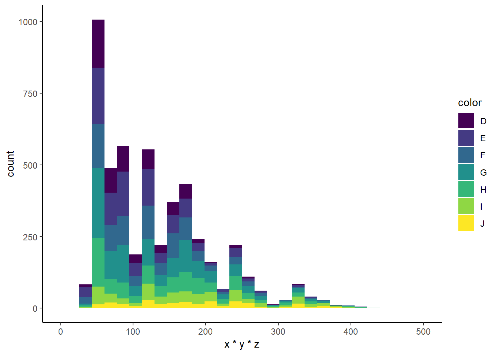
Često želimo promijeniti samo neki od aspekata grafa koji nije vezan uz podatke (npr. veličina ili orijentacija slova, izgled crtica na osima i sl.). Za ove stvari koristimo funkciju theme koja sadrži vrlo bogati niz parametara (pogledati dokumentaciju!). Neke od tih parametara su tzv. “elementi” teme (npr. element_line, element_text) koje namještamo pozivom pripadne funkcije unutar poziva funkcije theme, npr:
# mijenjamo izgled naziva grafa
# (za obitelj fontova preporučeno koristiti
#`serif`, `sans` ili `mono`)
... + theme( title = element_text(family = 'serif', face = 'bold.italic'))Zadatak 12.29 - izmjena elementa teme grafa
# promijenite orijentaciju slova na x osi
# tako da budu pod kutem od 45 stupnjeva
ggplot(diamondsSample, aes(cut)) + geom_bar() 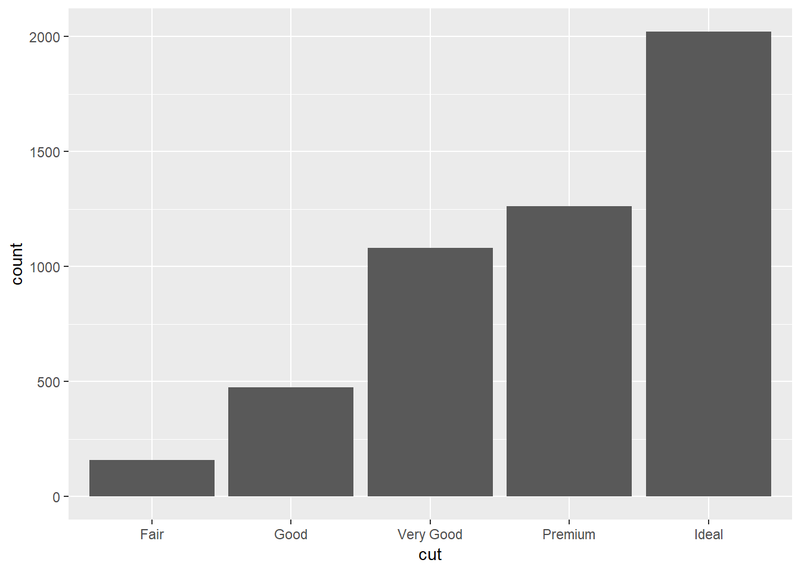
12.3.6 Uvjetni (facetirani) grafovi
Već smo se upoznali sa estetikom grupiranja, koja prije vizualizacije unutar skupa podataka radi podskupove po odabranoj varijabli te ih shodno tome na adekvatan način vizualizira. Također smo naučili da možemo raditi implicitna grupiranja uz pomoć estetika boje, oblika, veličine i sl.
Ono što je zajedničko navedenim principima jest da se vizualno razdvajanje u ovisnosti o nekoj varijabli provodi na istom grafu, tj. koristimo se raznim estetikama kako bi prikazali nekoliko različitih vizualizacijama u sklopu jedinstvenog grafa.
Uvjetni (facetirani) grafovi rade na istom principu, ali razdvajanje po odabranoj varijabli (ili varijablama) radi se na način da se vizualizira više grafova koji se onda prikazuju jedan pored drugoga. Rezultantni grafovi prikazuju istu informaciju kao i estetika (implicitne ili eksplicitne) grupe, ali je ovako nešto lakše proučiti svaki podgraf zasebno.
Prije demonstracije kako radimo uvjetno grafove moramo objasniti pojam tzv. “notacije statističkih formula” (statistical formula notation). Ova notacija se često koristi u R-u, pogotovo kod treniranja raznih statističkih modela, a radi se zapravo o formalnoj notaciji međuovisnosti varijabli nekog podatkovnog skupa zamišljenoj na način da se može na što kraći i jednostavniji način zapisati i ugraditi u programski kod.
Formule ćemo detaljnije obrađivati kasnije, a za sada ćemo pokazati samo vrlo jednostavan primjer. Ako želimo zapisati “y u ovisnosti o x-u”, onda formula izgleda ovako:
ovo možemo čitati i kao “y kao funkcija od x” ili - u slučaju linearnih modela - “y = ax + b”. Dakle, znak tilda (~) zapravo znači “u ovisnosti o”.
Prikažimo još neke jednostavnije oblike formula:
# z u ovisnost o x i y (plus ovdje nije aritmetičko zbrajanje!)
z ~ x + y
# y u ovisnosti o "svim ostalim varijablama"
y ~ .
# "sve ostale varijable" u ovisnosti o y
. ~ y
# tzv. "jednostrana" formula, "u ovisnosti o y"
~ y Zadnja dva primjera je malo teže matematički definirati no znaju se koristiti u pozivima funkcija za različite svrhe, većinom zbog jednostavnog zapisa i lake interpretacije.
Vratimo se sada na uvjetne grafove. Postoji dva osnovna načina stvaranja uvjetnih grafova, a to je uz pomoć funkcija
facet_grid- za organizaciju “podgrafova” u mrežu tj. matricufacet_wrap- za organizaciju “podgrafova” u jedan ili više redaka
Funkciju facet_grid koristimo kad podskupove radimo po jednoj ili dvije kategorijske varijable. Rastavljanje po dvije varijable prirodno radi “matricu”, dok rastavljanje po jednoj će napraviti redak ili stupac, što možemo kontrolirati formulom. Funkciju facet_wrap koristimo kada želimo rastaviti po jednoj varijabli, ali ne želimo da svi budu u jednom stupcu ili retku već ih želimo presložiti u više redaka (zato je i wrap, slično kao word wrap u uređivaču teksta koji prenosi tekst u drugi red).
Zadatak 12.30 - funkcija ‘facet_grid’
# reduciramo uzorak kako bi radili sa
# faktorima sa manjim brojem razina
diamondsSample %>%
filter(color %in% c("G", "H", "I", "J"),
cut %in% c("Very Good",
"Premium", "Ideal")) -> diamondsSample2
# napravite uvjetni graf u ovisnosti o kombinaciji
# boje (`color`) i reza (`cut`)
# koristite funkciju `facet_grid` i
# formulu kao parametar
ggplot(diamondsSample2, aes(depth, fill = clarity)) +
geom_histogram(bins = 5, position = 'dodge')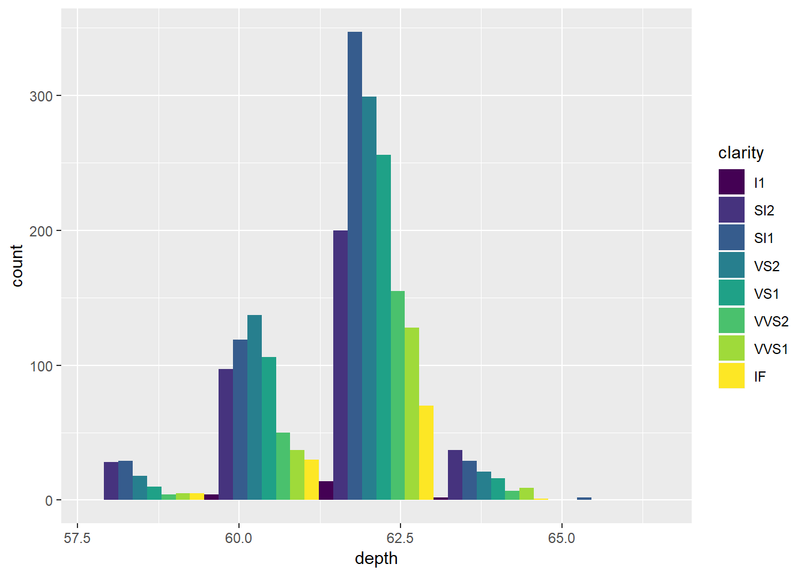
ggplot(diamondsSample2, aes(depth, fill = clarity)) +
geom_histogram(bins = 5, position = 'dodge') +
facet_grid(color ~ cut)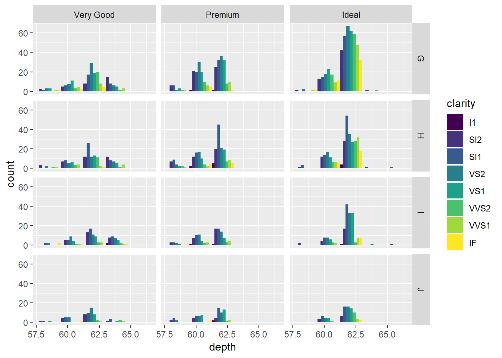
Zadatak 12.31 - funkcija ‘facet_grid’ (2)
# ponovite postupak, ali sada rastavite samo po boji
# grafove organizirajte u stupac
# koristite funkciju `facet_grid` i notaciju formule sa točkom
ggplot(diamondsSample2, aes(depth, fill = clarity)) +
geom_histogram(bins = 5, position = 'dodge')ggplot(diamondsSample2, aes(depth, fill = clarity)) +
geom_histogram(bins = 5, position = 'dodge') + facet_grid(color ~ .)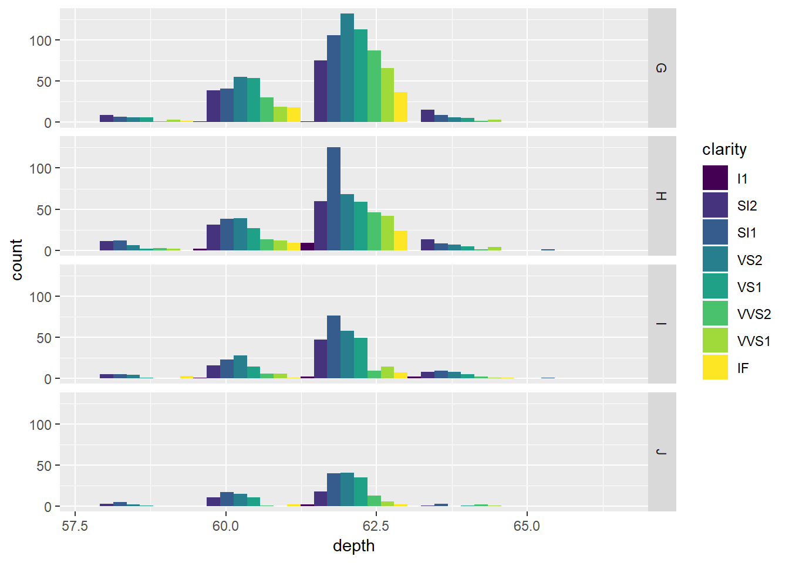
Uočite jednu bitnu značajku uvjetnih grafova - koordinatne osi (tj. skale) su poravnate. Naime, prije vizualizacije, ggplot prvo “trenira” skale na način da pronađe maksimalni raspon koji se onda koristi kao zajednička značajka svih grafova. Ukoliko to ne želimo, može određenu os (ili obje) učiniti slobodnom uz pomoć parametra scales kojeg postavimo na "free" (za obje osi) ili "free_x" odnosno "free_y" (ako želimo da samo jedna os bude poravnata a druga “slobodna”).
Pogledajmo još kako radi funkcija facet_wrap:
Zadatak 12.32 - funkcija ‘facet_wrap’
# razdvojite sljedeći graf u ovisnosti o prozirnosti (`clarity`)
# koristite funkciju `facet_wrap` i jednostranu formulu
ggplot(diamondsSample2, aes(x*y*z, price)) + geom_point() 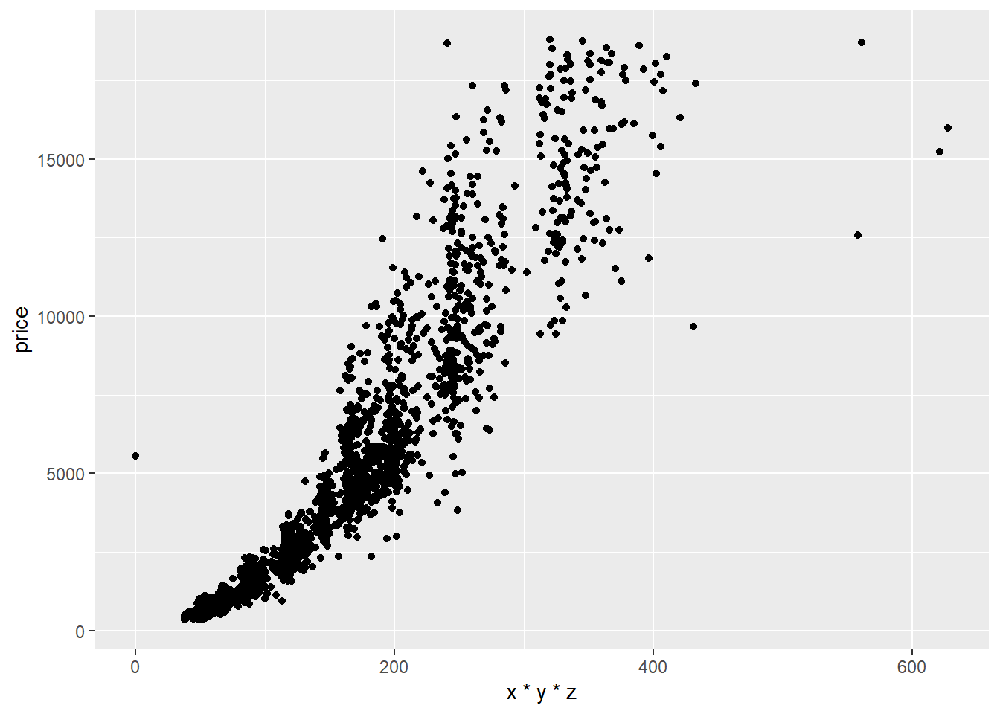
Ovime završavamo priču o gramatičkoj geometriji, njezinim aspektima i primjeni uz pomoć paketa ggplot2. Ovdje nisu ni približno objašnjenje sve mogućnosti ovoga paketa, zbog čega se snažno preporučuje dodatno čitanje dokumentacije i referenciranje na podsjetnik koji sadrži niz geometrija i opcija za koje u ovim lekcijama nije bilo mjesta. Također, ne treba zaboraviti na niz dodatnih paketa koji dodatno proširuju mogućnosti paketa ggplot2, a koje bi trebalo potražiti u ovisnosti o našim zahtjevima i željama glede vizualizacija koje želimo stvoriti za naše projekte podatkovne analize. Za inspiraciju zgodno je pogledati galeriju grafova i slika nastalih uz pomoć jezika R, a koja je dostupna na ovoj poveznici .
12.4 Grafovi u eksploratornoj analizi i izvještavanju
Za kraj možemo se kratko osvrnuti na razliku između grafova rađenih za eksploratornu analizu podataka i onih koje koristimo u izvještajima, za komunikaciju naših zaključaka drugim ljudima i prenošenje dobivenih saznanja.
Kod eksploratorne analize podataka često je glavni cilj - kvantiteta. Već je rečeno da se eksploratorna analiza svodi na traženje odgovora za niz pitanja koje analitičar postavlja vezano uz podatke. Estetika ovdje često nije bitna - glavno je da grafovi imaju dovoljno informacija da se kod naknadnog pregledavanja može ono što je predočeno staviti u odgovarajući kontekst. Analitičar će također često isprobavati različite kombinacije estetika, geometrija i statistika. Ponekad je zgodno koristiti i dodatne pakete koji omogućuju prikaz većeg broja varijabli na istom grafu, npr. funkcija ggpairs paketa GGally:
#library(GGally) #ako je potrebno
# uzimamo samo četiri stupca zbog jasnijeg prikaza
ggpairs(data = diamondsSample[,c(1, 2, 5, 7)])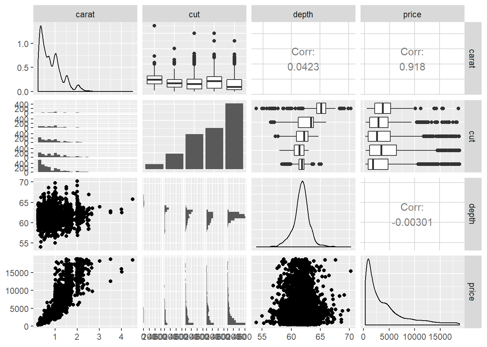
Eksploratorne grafove analitičar koristi radi predočavanja samih podataka, kako bi potražio uzorke, prepoznao distribucije ili prirodna grupiranja podataka ili uočio iskočne vrijednosti (tzv. outlier-e). Isto tako, eksploratorni grafovi se koriste za predočavanje raznih agregiranih statistika. Ukoliko se radi o prediktivnoj analizi podataka, tj. cilj analize jest razviti metodu predviđanja nekih varijabli na osnovu drugih varijabli podatkovnog skupa, analitičar će često u tijeku eksploratorne analize stvoriti nekoliko jednostavnijih prediktivnih modela koje će onda vizualizirati na grafu kako bi mogao slikom predočiti učinkovitost modela te na osnovu uočenih nedostataka razviti strategiju za daljnje korake analize.
Kod izvještavanja s druge strane ključna je kvaliteta grafa u smislu jasnog i preglednog predstavljanja informacije. Graf mora jasno komunicirati informacije koje su njime predočene, uz pažljivo odabrana objašnjenja i pomno odabrano korištenje tzv. metapodataka, tj. dodatnog teksta i anotacija. Za stvaranje izvještajnih grafova preporučuje se koristiti dodatne geom_text slojeve za tekstualnim oznakama na odgovarajućim područjima grafa gdje one mogu najviše doprinijeti, a također i kreativno korištenje geom_point, geom_hline, geom_vline, geom_rect i sličnih geometrijskih slojeva koji će dodatno pojasniti određene segmente grafa. Isto tako, preporučuje se unaprijed pripremiti temu koju ćemo onda konzistentno primjenjivati na sve grafove.
U velikom broju slučajeva grafovi u izvještajima su zapravo probrani i “uljepšani” grafovi dobiveni tijekom eksploratorne analize. No analitičar bi trebao posebnu pažnju posvetiti činjenici da se grafovi u izvještajima često rade za publiku koja je daleko manje upoznata sa podatkovnim skupom i raznim detaljnim saznanjima koje je analitičar dobio tijekom eksploratorne analize. Izvještajni grafovi stoga moraju biti orijentirani krajnjem korisniku, te s tim ciljem i pažljivo dizajnirani. Zbog toga se preporučuje da svi elementi grafa - uključujući i naslov, legende i sl. budu orijentirani komunikaciji informacije i razjašnjenju što graf prikazuje, a što je u skladu sa zaključcima koje publikacija iznosi.
Konačno, ponekad želimo zbog štednje prostora unutar jedne slike staviti više različitih grafova. Ovo obično radimo uz pomoć više zasebnih slika koje slažemo unutar sučelja kojeg koristimo za pisanje publikacije čiji su dio navedeni grafovi, no možemo i unaprijed pripremiti grafove uz pomoć paketa gridExtra. Između ostalog, ovaj paket nudi funkciju grid.arrange uz pomoć koje grafove slažemo u matricu s odabranim brojem redaka i stupaca.
#library(gridExtra) # ukoliko je potrebno
# grafove koje slažem u matricu pohranjujem u varijable
g1 <- ggplot(diamondsSample, aes(x*y*z, price, color = color)) +
geom_point(alpha = 0.6)
g2 <- ggplot(diamondsSample, aes(x = x*y*z, fill = color)) +
geom_histogram(bins = 30, na.rm = T) +
scale_fill_brewer(palette = "Greens")
g3 <- ggplot(diamondsSample, aes(x = cut)) +
geom_bar(fill = "blue", alpha = 0.5)
g4 <- ggplot(diamondsSample, aes(x = color, fill = clarity)) +
geom_bar() + coord_polar()
# pozivam funkciju `grid.arrange`
grid.arrange(g1, g2, g3, g4, nrow = 2, ncol = 2)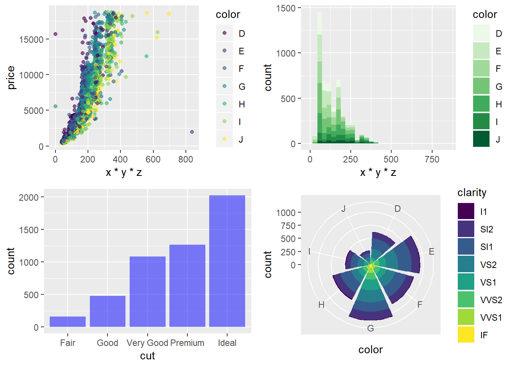
Zadaci za vježbu
- Učitajte i proučite podatkovni skup
diamondskoji dolazi zajedno s paketomggplot2.
Prikažite raspodjelu cijene dijamanata uz pomoć dva grafa - histograma i tzv. frekvencijskih poligona (funkcija
geom_freqpoly)). Cijene podijelite u 10 ladica.Grafovima iz a) dodajte “čistoću” dijamanta (stupac
clarity) koji ćete postaviti nafillestetiku (histogram) odnosnocolorestetiku (frekvencijski poligoni). Koju razliku između grafova uočavate obzirom na default-ni aspekt pozicije?
- Učitajte i proučite podatkovni skup
mpg. Pokušajte rekonstruirati sljedeće grafove. Nepoznate geometrije identificirajte uz pomoć podsjetnika.
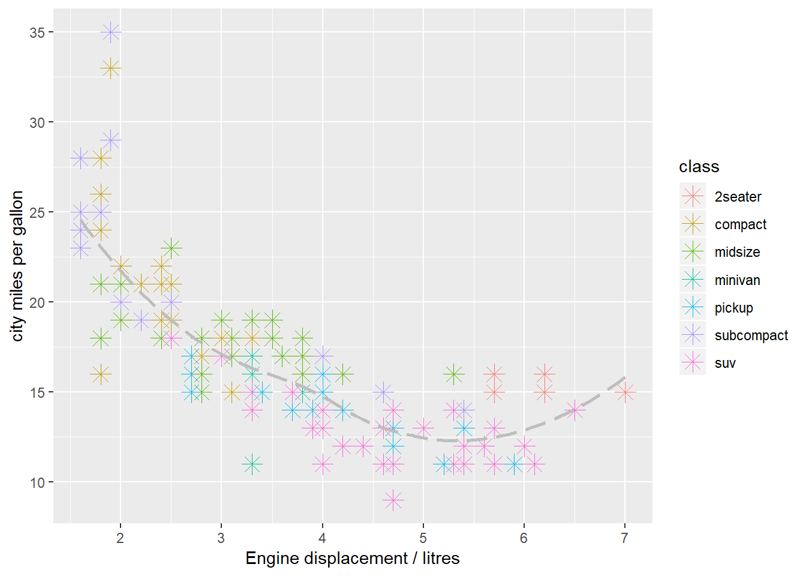

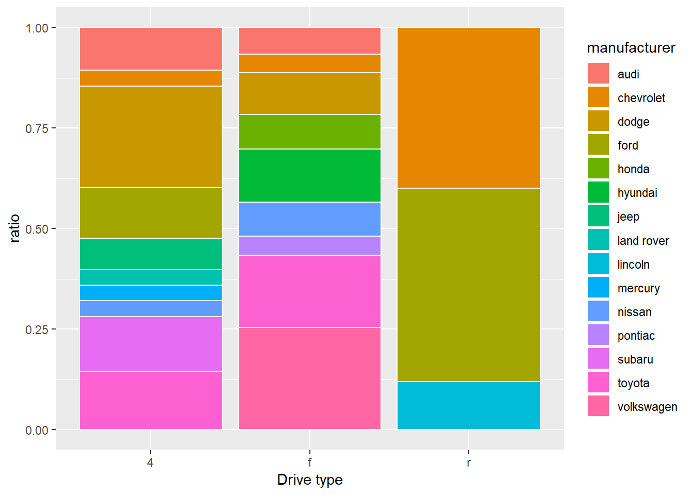
- Uz pomoć funkcija skaliranja na sljedećem grafu:
- os x nazovite
"broj cilindara" - os y nazovite
"ukupno"i povećajte raspon do 100 - legendu za godine nazovite
"godina" - za boju pravokutnika odaberite paletu
"Dark2"
- os x nazovite
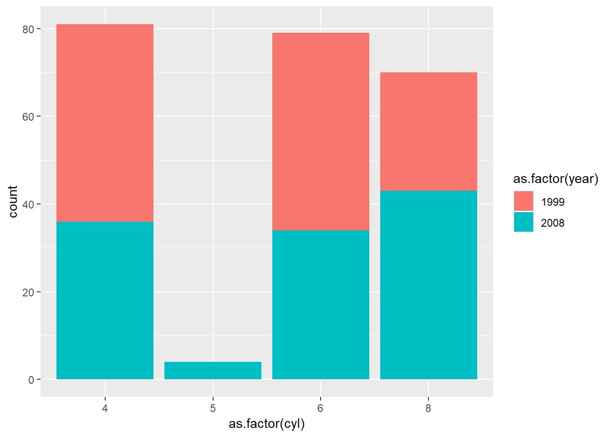
- Promijenite temu sljedećeg grafa na sljedeći način:
- prilagodite prikaz projekciji na platno
- okrenite nazive na x osi vertikalno
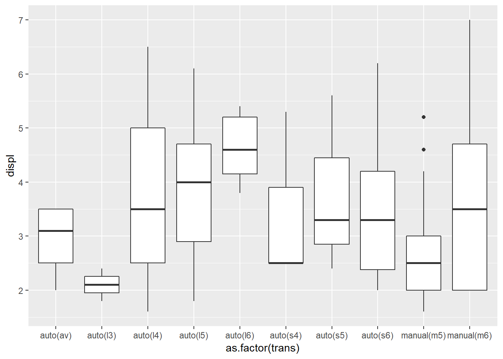
- Sljedeći graf prikazuje histogram potrošnje na autocesti pri čemu boja pravokutnika odražava broj cilindara. Pokušajte poboljšati interpretabilnost grafa tako da estetiku boje zamijenite prikazom više grafova uvjetovanih brojem cilindara. Grafove organizirajte u matricu 2 x 2.
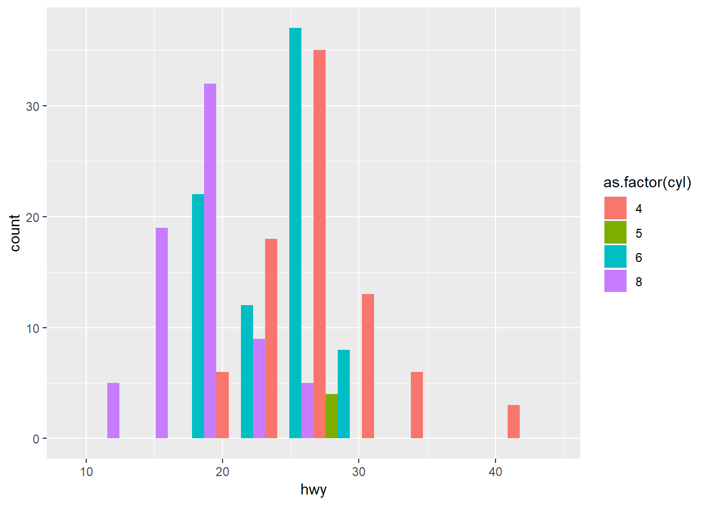
- Pretpostavimo da imamo sljedeći podatkovni okvir:
prodaja <- data.frame(mjesec = 1:12,
ukupno = c(10000, 5000, 12000, 3000, 5000, 7000,
10000, 2000, 4000, 8000, 11000, 14000))i da ga želimo predočiti stupčastim grafom (engl. bar chart), no funkcija geom_bar po default-u radi sa samo jednom varijablom za koju računa sumarne statistike. Kako riješiti ovaj problem? Predložite rješenje i stvorite odgovarajući stupčasti graf.

Programirajmo u R-u by Damir Pintar is licensed under a Creative Commons Attribution-NonCommercial-NoDerivatives 4.0 International License.
Based on a work at https://ratnip.github.io/FER_OPJR/
Bache, Stefan Milton, and Hadley Wickham. 2014. Magrittr: A Forward-Pipe Operator for R. https://CRAN.R-project.org/package=magrittr.